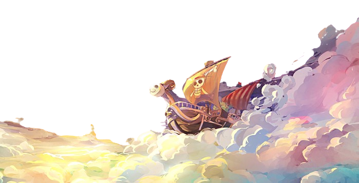

Sailing!

Romance Dawn Arc – Luffy sets sail to become Pirate King.
Orange Town Arc – Fights Buggy the Clown and gains Nami as an ally.
Syrup Village Arc – Usopp joins after battling Captain Kuro.
Baratie Arc – Sanji is recruited after Luffy clashes with the fearsome Don Krieg.
Arlong Park Arc – Luffy frees Nami from Arlong's tyranny.
Loguetown Arc – Luffy encounters Smoker and sees Gol D. Roger’s execution site.
Reverse Mountain Arc – Enters the Grand Line and meets Laboon.
Whiskey Peak Arc – A town of bounty hunters is defeated.
Little Garden Arc – A prehistoric island and a battle with Mr. 3.
Drum Island Arc – Chopper joins after a fight against Wapol.
Alabasta Arc – The Straw Hats fight Crocodile to save Vivi’s kingdom.

Jaya Arc – Luffy clashes with Bellamy and meets Blackbeard.
Skypiea Arc – The crew reaches Skypiea, defeats Enel, and discovers the legend of the Golden Bell.

Long Ring Long Land Arc – Luffy plays the Davy Back Fight against Foxy.
Water 7 Arc – The Going Merry is declared unusable; Robin is taken by CP9.
Enies Lobby Arc – The crew declares war on the World Government and rescues Robin.
Post-Enies Lobby Arc – Franky builds the Thousand Sunny, and Usopp rejoins the crew.
Thriller Bark Arc – Luffy battles Gecko Moria, regains stolen shadows, and welcomes Brook to the crew.
Sabaody Archipelago Arc – The crew meets the Eleven Supernovas, defies a Celestial Dragon, and gets separated by Kuma.
Amazon Lily Arc – Luffy lands on an island of women and meets Boa Hancock.
Impel Down Arc – Luffy breaks into the world's toughest prison to rescue Ace.
Marineford Arc – A massive war erupts between the Marines and Whitebeard Pirates; Luffy fails to save Ace, who dies protecting him.
Post-War Arc – Luffy mourns Ace, trains for two years, and prepares for the New World.

Return to Sabaody Arc – The crew reunites after two years and sets sail for the New World.
Fish-Man Island Arc – Luffy defeats Hody Jones and declares war on Big Mom.

Punk Hazard Arc – The crew forms an alliance with Law, defeats Caesar Clown, and learns about Doflamingo.
Dressrosa Arc – Luffy battles Doflamingo, liberates Dressrosa, and recruits the Grand Fleet.
Zou Arc – The crew learns about the Road Poneglyphs and the Mink Tribe’s alliance with the Kozuki Clan.
Whole Cake Island Arc – Luffy and team infiltrate Big Mom’s territory to rescue Sanji, leading to a chaotic escape.

Wano Arc – The crew helps the Samurai reclaim their land, Luffy awakens Gear 5, and Kaido is finally defeated, making Luffy a Yonko.
Egghead Arc – The crew meets Dr. Vegapunk and uncovers shocking truths about the Void Century.
Elbaf Arc (Upcoming) – The Giants’ kingdom awaits, with new allies and crucial revelations about Joy Boy’s past.